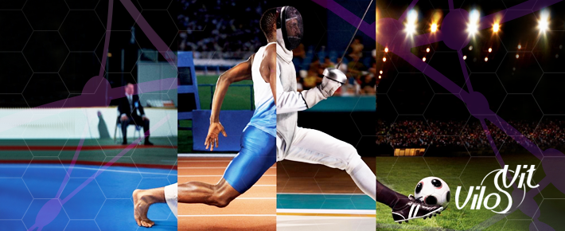
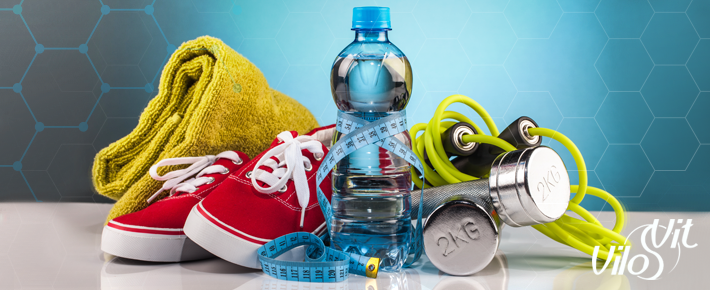
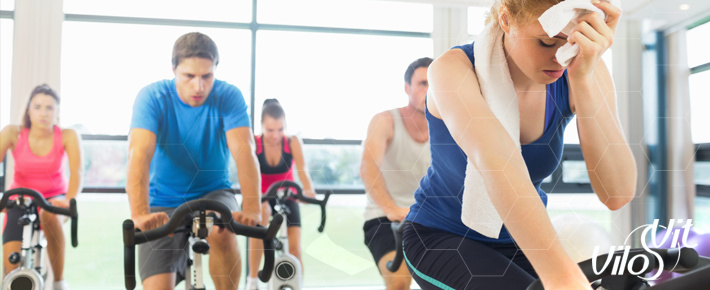
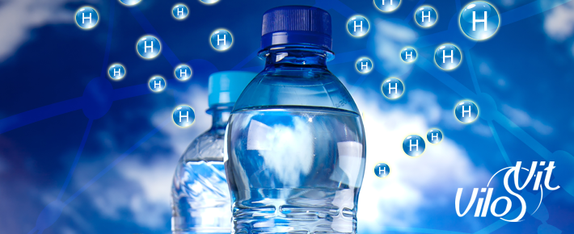
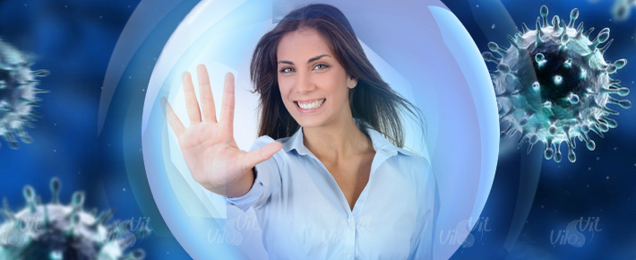
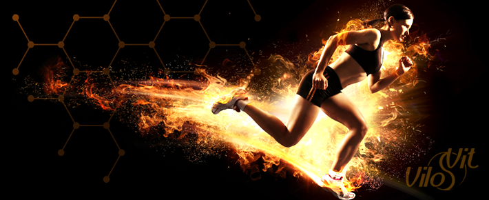
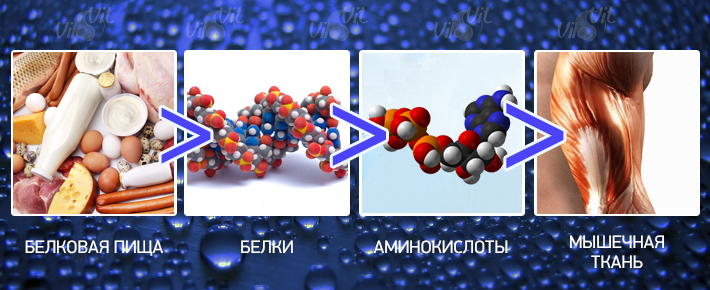
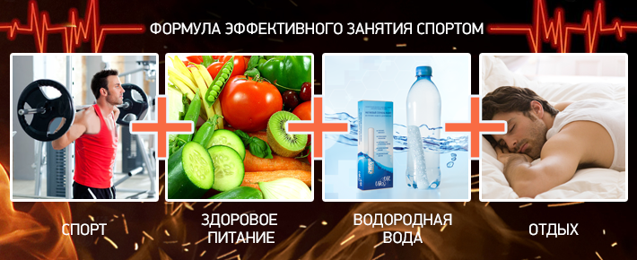

- главная
- пищеварение
+ 7 (495) 64-111-63
info@vilovit.ru
Стержень Виловит® Источник Вашего Долголетия!
Спорт в нашей жизни
Как уже говорилось, наше здоровье зависит от многих факторов, таких как экология, правильное питание, здоровый образ жизни и многое другое. Активные люди понимают, что правильное питание и физическая культура залог здоровья. Поэтому с каждым годом все большее количество людей уделяет внимание спорту. Хоть каждый преследует свою цель от занятия спортом, такую как: сбросить лишний вес, обрести красивую форму тела, подготовиться к спортивным соревнованиям или просто вести активный образ жизни, но все же в первую очередь спорт укрепляет организм и делает наш иммунитет сильнее.
Спорт в нашей жизни
О правильном питании написаны тома с огромным количеством страниц. Разработано множество систем и рационов. Все о них мы читали в книгах и интернете, и многие системы испробовали на себе. Но многие люди забывают о воде - источнике жизни всего живого на планете. Вода – это незаменимый участник процесса обмена веществ в организме человека. Уже не раз доказано, что вода устраняет чувство голода. Поэтому ее дефицит значительно замедляет метаболизм, что губительно для печени.
В процессе физических нагрузок увеличивается потоотделение и напряжение других биохимических и метаболических функций тела. Во время активных упражнений питательные вещества транспортируются к органам и тканям, а токсины выводятся через потовые железы. Человек теряет много жидкости, а это значит, что необходимо восстановить нужный баланс в организме: во время тренировки периодически потреблять воду.
Исследовательская статистика в области физической культуры рекомендует следующее количество воды: перед тренировкой за 1-1,5 часа необходимо употребление 300 граммов воды, во время тренировки по 150 граммов каждые 20 мин. При низкой интенсивности тренинга рекомендуется употребление воды при первом появлении жажды. Так же не стоит забывать о воде вне тренировок для нормальной работы всех систем человеку необходимо как минимум 1,5-2 литра воды в день.
Дефицит воды во время физических нагрузок
Любая физическая нагрузка влечет за собой потерю определенного количества воды! Это количество зависит от многих факторов, среди которых физические размеры человека, температура воздуха и разумеется ее интенсивности и сложности. Основная часть воды выходит из организма с потом, небольшая же часть при интенсивном дыхании.
При спортивных тренировках происходит обезвоживание организма из-за потери воды, в результате кровь становится вязкой, но при этом наш мозг и мышечная ткань не прекращают нуждаться в питательных веществах и кислороде. Для их доставки, нагрузка на сердце увеличивается в трое, чтобы прокачать загустевшую кровь. Начинает расти частота сердечных ударов, повышается нагрузка на сердце, растет температура тела. В результате теряется координация, выносливость, возможно кислородное голодание и головокружение. При таких условиях эффективность тренировки падает, а повышенная нагрузка на сердце сводят результаты к нулю. Поэтому, чтобы тренировка была полезной и эффективной необходимо контролировать водный баланс и не допускать обезвоживания организма.
Не полагайтесь на ощущение жажды. Активные занятия спортом подавляют рецепторы жажды из-за большой дыхательной активности в горле, поэтому к моменту, когда потребление воды необходимо, ваш организм уже будет обезвожен больше допустимого. Помимо этого, с возрастом детекторы жажды в теле теряют личную чувствительность.
Признаки обезвоживания организма: ощущение жажды; сухость во рту; высохшие губы; головокружение; переутомление; головная боль; нервозность; отсутствие здорового аппетита.
Активированная вода с ВилоВит
Изобретение японского института воды способно активировать воду, заряжая ее водородом. Водород это природный антиоксидант и энергоноситель (топливо) человека. Он входит в состав не только воды, но и в биологические соединения белков, углеводов, липидов, нуклеиновых кислот.
Прием водородной воды приводит к оптимизации водного баланса организма.
Как уже говорилось, при физических тренировках, наш организм теряет много воды, в итоге следует обезвоживание организма. Поэтому необходимо следить за водным балансом. Активированная вода с ВилоВит легко усваивается органами, происходит насыщение водой клеток и тканей и как следствие, улучшается их функционирование и регенерация. Показатели водородной воды (отрицательный ОВП и щелочная среда) соответствуют показателям внутренней среды организма, что приводит к быстрому усвоению воды, оптимизации водного баланса организма, нормализации обмена веществ и вывода токсинов, дополнительной энергии, быстрому восстановлению сил после нагрузок, в результате чего так же появляется возможность увеличить физические нагрузки.
Водородная вода нормализует обмен веществ
Все мы знаем, что вода является главным элементом для обмена веществ. Дефицит воды значительно замедляет процесс обмена веществ, потому что в данном случае печень начинает восстанавливать запасы жидкости в организме, а не сжигать жиры, которые застаиваются в организме. Водородная вода оптимизирует водный баланс организма, что позволяет доставлять питательные вещества по всему организму, а следовательно процесс обновления и роста тканей и клеток не нарушается.
Вывод токсинов и шлаков
Вывод токсинов и шлаков так же является необходимым процессом, чтобы обеспечить детоксикацию организма человека. Профессиональные спортсмены знают, что из-за насыщенного питания образуется большое количество токсинов и вредных веществ. Например, белковый обмен участвует в интоксикации организма. Это различные азотистые соединения (В первую очередь аммиак), которые образуются в процессе аминокислотного обмена. Поэтому при потреблении большого количества белковой пищи, значительно повышается фон азотистой интоксикации.
Функцию вывода вредных веществ выполняют почки, они направляют токсины в мочевой пузырь, после чего они выводятся из организма. Так же за вывод шлаков и токсинов отвечает кишечник , который выводит их вместе с отработанными веществами.
Водородная вода активирует мочегонные процессы и эффективно блокирует излишки в пищеварительном тракте, что косвенно уменьшает количество метаболитов, таких как: сероводород, аммиак, гистамины, индолы, фенолы и скатолы. Поэтому если постоянно употреблять водородную воду, то все отработанные вещества и токсины будут полностью выводиться, а значит, не нанесут вреда организму.
Водородная вода заряжает человека энергией
Во время тренировок человек затрачивает значительную часть энергии, которая образуется в результате химических процессов организма. Одними из элементов для образования энергии, являются углеводы. При распаде углеводов происходит энергоснабжающая реакция. При исследовании данного процесса нобелевский лауреат Альберт Сент-Дьерди доказал, что именно водород, который входит в состав углеводов, является энергоносителем человека. Так, именно отщепление водорода, в процессе сгорания углеводов, выделяет энергию. Поэтому дополнительное питание водородом будет способствовать выделению дополнительной энергии человека.
Другой Нобелевский лауреат Питер Митчелл получил премию за теорию о Хемиосмосе. Согласно этой модели, водород участвует в производстве АТФ (аденозинтрифосфорная кислота) в митохондриях (источники энергии в клетках). Митохондрии выполняют эту функцию только в том случае, если на их мембранах есть ионы водорода. Энергия вырабатывается через дегидрогеназу водорода.
Все выше сказанное доказывает, что активированная вода заряженная водородом наполняет человека дополнительной энергией, благодаря которой ваши тренировки станут эффективнее.
Водородная вода способна образовывать и восстанавливать мышечную ткань.
Как нам известно, мышечная ткань состоит из белковых соединений. На первый взгляд содержание белка не такое большое - от 15% до 25% общей мышечной массы, но учитывая, что 75-80% мышечной массы состоит из воды, то становится очевидно, что «сухая» мышечная ткань на 75-80% состоит из белка. Так же белок является основным компонентом различных мембран, как внутриклеточных, так и мембран, составляющих оболочку мышечного волокна. Из белков состоит межклеточная соединительная ткань, связки и сухожилия мышц.
Образование мышечной ткани происходит следующим образом: Белок поступает в организм с пищей, где при пищеварении белки распадаются на аминокислоты, далее аминокислоты попадают в кровь и распространяются по всем клеткам организма. После этого аминокислоты собираются в белки характерные достигнутой клетке, в том числе в мышечную ткань. Поэтому белки требуются организму для восстановления поврежденных клеток мышц и для роста самой мышечной ткани. Водородная вода способствует росту мышечной ткани. Учитывая то, что водород входит в состав соединения белков, где он образует водородную связь, то можно сказать, что водород, попадая в организм, активно участвует в образовании новой структуры мышечной ткани.
Водородная вода активно влияет на силу мышцы, благодаря значительному повышению микроциркуляции и реологии крови человека. Сила мышечной ткани, зависит от площади поперечного сечения самой мышцы. А объем и состояние поперечного сечения мышцы, находится в зависимости от количества питательных веществ, доставляемых кровью. При усилении интенсивности кровообращения в мышцах, развиваются мелкие кровеносные сосуды, в результате быстрее и активнее развивается мышечная ткань.
Выводы о пользе активированной воды с ВилоВит.
Обогащенная водородом живая вода предотвращает обезвоживание организма оптимизацией водного баланса в клетках и тканях, повышает интенсивность кровообращения на всех уровнях кровеносной системы, налаживает клеточный обмен веществ, что приводит к эффективному восстановлению и росту мышц, активно выводит шлаки и токсины. Особенно полезно употребление водородной воды для спортсменов, заинтересованных в быстром и безопасном для здоровья росте мышечной ткани.